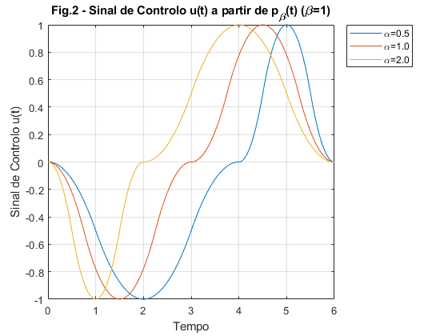
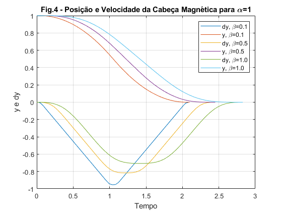
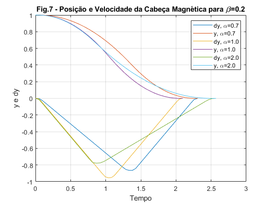
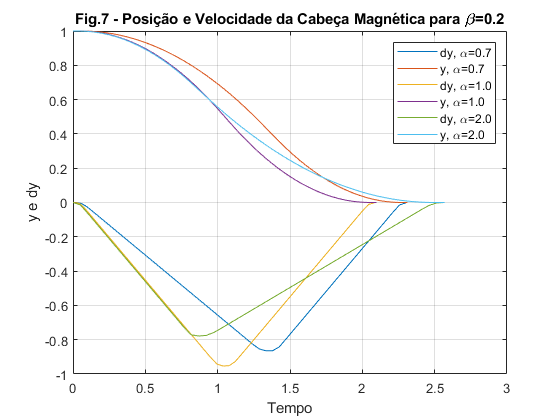
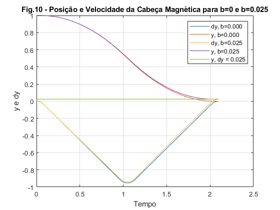
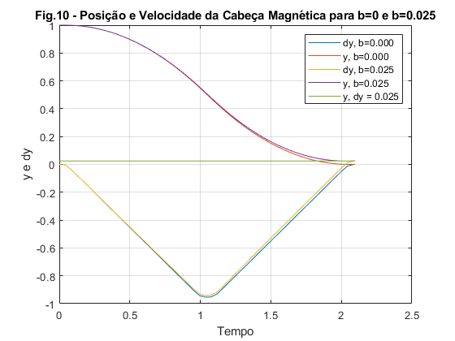
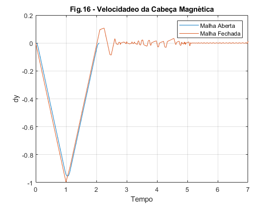
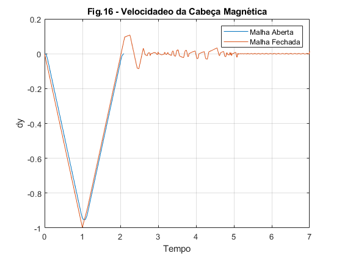
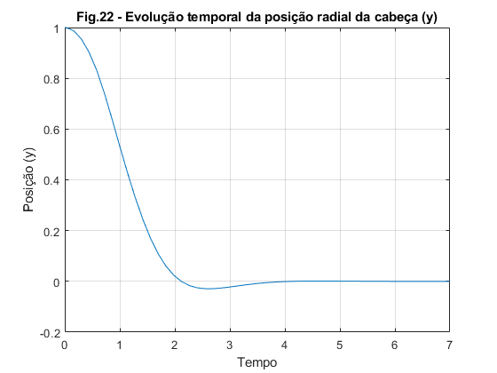

Modelação e Simulação - Laboratório 2
Carlos Silva - 81323
Ricardo Espadinha - 84178
Grupo 33 - Segunda-feira, 10:00h LSDC1
2018/2019 - 2º Semestre
Contents
Exercício 2 - Teste da Geração do Impulso Protótipo
%Reset do ambiente de trabalho clear; close all; testebeta = [0.2 0.6 1]; testetempo = linspace(-1,1, 1000); for i=1:length(testebeta) pb = ImpulsoPrototipo(testetempo, testebeta(i)); plot(testetempo, pb, 'DisplayName', sprintf('\\beta=%.1f', testebeta(i))); hold on; end legend('Location','northeastoutside'); grid on; xlabel('Tempo'); ylabel('Impulso Protótipo') title(sprintf('Fig.1 - Função de Geração do Impulso Protótipo p_\\beta(t)'));
Comentários: Verifica-se que quanto maior for o valor de beta, menor é o tempo que o sinal permanece a 1 (área total do triângulo). Analisando, por exemplo, o caso em que , numa convolução entre o sinal triangular e rectangular descritos no enunciado, o sinal triangular apenas se encontra todo "coberto" pelo rectangular num instante (t=0). Aplicando a lógica inversa, no sinal em que , o impulso gerado aproxima-se mais do rectangular.
Exercício 3 - Teste da Geração do Sinal u(t)
%Reset do ambiente de trabalho clear; close all; T = 6; %Fixar beta=1 (Impulso Protótipo aproximadamente triângular) para observar o efeito de alfa beta = 1; U1 = -1; U2 = 1; n1 = 1000; n2 = 1000; testealpha = [0.5 1 2]; for i=1:length(testealpha) [u, ut] = sinalu(T, testealpha(i), beta, U1, U2, n1, n2); plot(ut, u, 'DisplayName', sprintf('\\alpha=%.1f', testealpha(i))); hold on; end legend('Location','northeastoutside'); grid on; xlabel('Tempo'); ylabel('Sinal de Controlo u(t)') title(sprintf('Fig.2 - Sinal de Controlo u(t) a partir de p_\\beta(t) (\\beta=1)'));
Comentários: Como podemos observar, a função gera u(t) através do Impulso Protótipo. Fixaram-se todos os valores à excepção do alpha, de modo a ver o impacto deste. Verifica-se o esperado, tendo em conta a relação entre T1 e T2. Por exemplo, para alpha=1 => T1=T2.
Exercício 7 - Simulação do Sistema para diversos valores de alpha e beta
%Reset do ambiente de trabalho clear; close all; %Condições Iniciais y0 = 1; dy0 = 0; n1 = 100; n2 = 100; %Testes iniciais para b=0 (Sistema não Perturbado) b = 0; %Testes fixando alpha=1 e variando beta=0.1 / beta=0.5 / beta=1 alpha = 1; %T minimo beta = [0.1 0.5 1]; ydy_a = figure; planoFase_a = figure; sinaisU_a = figure; for i=1:length(beta) %Função que calcula U1, U2 e T de acordo com as condições que se %concluiram pela análise teórica [U1, U2, T] = GetUsT(alpha, beta(i)); %Gerar sinal u(t) e correr a simulação [u, ut] = sinalu(T, alpha, beta(i), U1, U2, n1, n2); u_t = [ut', u']; sim('Q7'); figure(sinaisU_a); plot(ut, u, 'DisplayName', sprintf('\\beta=%.1f', beta(i))); hold on; figure(ydy_a); plot(tout, dy, 'DisplayName', sprintf('dy, \\beta=%.1f', beta(i))); hold on; plot(tout, y,'DisplayName', sprintf('y, \\beta=%.1f', beta(i))); figure(planoFase_a); plot(y, dy, 'DisplayName', sprintf('\\beta=%.1f', beta(i))); hold on; end %Informação de cada plot figure(sinaisU_a); legend('Location','northeast'); grid on; xlabel('Tempo'); ylabel('Sinal de Controlo u(t)') title(sprintf('Fig.3 - Sinais de Controlo u(t) para \\alpha=1')); figure(ydy_a); legend('Location','northeast'); grid on; xlabel('Tempo'); ylabel('y e dy') title(sprintf('Fig.4 - Posição e Velocidade da Cabeça Magnética para \\alpha=1')); figure(planoFase_a); legend('Location','northeast'); grid on; xlabel('y'); ylabel('dy') title(sprintf('Fig.5 - Plano de Fase para \\alpha=1'));
Comentários: Verifica-se que o valor de tem influencia em T (maior leva a um maior T).Isto é de esperar pela forma como é gerado o impulso Prototipo. Da mesmo forma, também é possivel observar que, para valores muito pequenos de , u(t) aproxima-se de um sinal rectângular e que, pela lógica contrária. para valores de muito próximos de 1, u(t) aproxima-se de um sinal triângular. Em relação à Posição e Velocidade da Cabeça, pode-se verificar que para todos os casos, o sistema possui os valores finais desejados, no entanto demora mais tempo a atingir os mesmos quanto maior for o valor de .
%Testes fixando beta=0.2 e variando alpha=1 / alpha=2 / alpha=4 beta = 0.1; %u(t) aproximandamente rectângular alpha = [0.7 1 2]; ydy_b = figure; planoFase_b = figure; sinaisU_b = figure; for i=1:length(alpha) %Função que calcula U1, U2 e T de acordo com as condições que se %concluiram pela análise teórica [U1, U2, T] = GetUsT(alpha(i), beta); %Gerar sinal u(t) e correr a simulação [u, ut] = sinalu(T, alpha(i), beta, U1, U2, n1, n2); u_t = [ut', u']; sim('Q7'); figure(sinaisU_b); plot(ut, u, 'DisplayName', sprintf('\\alpha=%.1f', alpha(i))); hold on; figure(ydy_b); plot(tout, dy, 'DisplayName', sprintf('dy, \\alpha=%.1f', alpha(i))); hold on; plot(tout, y,'DisplayName', sprintf('y, \\alpha=%.1f', alpha(i))); figure(planoFase_b); plot(y, dy, 'DisplayName', sprintf('\\alpha=%.1f', alpha(i))); hold on; end %Informação de cada plot figure(sinaisU_b); legend('Location','northeast'); grid on; xlabel('Tempo'); ylabel('Sinal de Controlo u(t)') title(sprintf('Fig.6 - Sinais de Controlo u(t) para \\beta=0.2')); figure(ydy_b); legend('Location','northeast'); grid on; xlabel('Tempo'); ylabel('y e dy') title(sprintf('Fig.7 - Posição e Velocidade da Cabeça Magnética para \\beta=0.2')); figure(planoFase_b); legend('Location','northeast'); grid on; xlabel('y'); ylabel('dy') title(sprintf('Fig.8 - Plano de Fase para \\beta=0.2'));
 
 Comentários: Fixou-se de forma a que u(t) fosse, aproximadamente, um conjunto de dois sinais rectângulares, como se pode verificar. Ainda no sinal de controlo, pode-se verificar que o possui dois tipos de influencias distintas no sinal: Para valores de  T1>T2 e para valores de T1<T2; O valor de T é minimo para , como comprovado na parte teórica. Em relação à Posição e Velocidade da Cabeça, pode-se verificar que para todos os casos, o sistema possui os valores finais desejados, no entanto demora menos tempo a atingir os mesmos para .
T1>T2 e para valores de T1<T2; O valor de T é minimo para , como comprovado na parte teórica. Em relação à Posição e Velocidade da Cabeça, pode-se verificar que para todos os casos, o sistema possui os valores finais desejados, no entanto demora menos tempo a atingir os mesmos para .
%Comparação com uma vesão perturbada do sistema (b=0 e b=0.025) perturbacao = [0 0.025]; %Testes fixando alpha=1 e variando beta=0.1 / beta=0.5 / beta=1 alpha = 1; %T minimo beta = 0.1; %u(t) aproximadamente rectângular ydy_pert = figure; planoFase_pert = figure; sinaisU_pert = figure; %Função que calcula U1, U2 e T de acordo com as condições que se %concluiram pela análise teórica [U1, U2, T] = GetUsT(alpha, beta); %Gerar u(t) [u, ut] = sinalu(T, alpha, beta, U1, U2, n1, n2); u_t = [ut', u']; plot(ut, u); grid on; xlabel('Tempo'); ylabel('Sinal de Controlo u(t)'); title(sprintf('Fig.9 - Sinal de Controlo u(t) para \\alpha=1 e \\beta=0.1')); for i=1:length(perturbacao) b = perturbacao(i); %Correr Simulação sim('Q7'); hold on; figure(ydy_pert); plot(tout, dy, 'DisplayName', sprintf('dy, b=%.3f', b)); hold on; plot(tout, y,'DisplayName', sprintf('y, b=%.3f', b)); figure(planoFase_pert); plot(y, dy, 'DisplayName', sprintf('b=%.3f', b)); hold on; end %Desenhar uma linha para y, dy = 0.025 figure(ydy_pert); plot(tout,0.025*ones(size(tout)), 'DisplayName', 'y, dy = 0.025'); %Informação de cada plot legend('Location','northeast'); grid on; xlabel('Tempo'); ylabel('y e dy'); title(sprintf('Fig.10 - Posição e Velocidade da Cabeça Magnética para b=0 e b=0.025')); figure(planoFase_pert); legend('Location','northeast'); grid on; xlabel('y'); ylabel('dy'); title(sprintf('Fig.11 - Plano de Fase para b=0 e b=0.025'));
 
 
Comentários: De acordo com os resultados anteriores, fixou-se (para que T fosse mínimo) e (para que u(t) se aproxime de um conjunto de dois sinais rectângulares). Assim, obteve-se o u(t) discrito anteriormente e, de forma a observar a influencia da perturbação b, simulou-se esse sistema para b=0 (s/ perturbação) e para b=0.0250 (c/ perturbação). Assim, observa-se que existe uma perturbação no valor final da Posição e da Velocidade em relação a valor desejado (0), correspondente a b.
Também é importante de notar que, para todos os casos observados, verifica-se a condição das amplitudes serem sempre <=1.
Exercício 8 - Representação da função de geração da entrada u(y, dy)
%Reset do ambiente de trabalho clear; close all; %Vector de posições e velocidades para criar meshgrid de teste do %controlador y = linspace (-2, 2); dy = linspace (-2, 2); [Y, dY] = meshgrid(y, dy); %=== Região tracejada do Diagrama de Blocos === %s1: Sinal que entra no bloco subsys s1 = 0 - Y; %s2: Sinal que sai do bloco subsys s2 = sign(s1).*sqrt(2*abs(s1)); %s3: Sinal que entra no bloco sign, composto por s2 e -dY s3 = s2 - dY; %U: Sinal que sai da região tracejada U = sign(s3); %============================================== figure; surf(Y, dY, U); view(45, 45); grid on; title('Fig.12 - u(y, $\dot{y}$)', 'Interpreter', 'latex'); xlabel('Posição (y)'); ylabel('Velocidade ($\dot{y}$)', 'Interpreter', 'latex'); zlabel('Sinal de Controlo (u)'); title('\textbf{Fig.13 - Fun\c{c}\~ao de gera\c{c}\~ao da entrada u(y, $\dot{y}$)}', 'Interpreter', 'latex'); figure; contour(Y, dY, U); grid on; xlabel('y'); ylabel('$\dot y$','Interpreter','LaTex') zlabel('u'); title('Fig.14 - Curva de Comutação');

Foi calculado que U = sign( ((sign(-Y))*(sqrt(2*abs(-Y)))) - dY). É de notar que, de forma a que a multiplicação das matrizes seja feita elemento a elemento, em vez da multiplicação normal de matrizes, é necessário colocar um '.' antes do '*'.
Este novo sistema em cadeia fechada, comporta-se de maneira diferente do anterior (em malha aberta): Este sistema, procura ajustar a sua posição dinamicamente através da alteração de valores da velocidade. Esta relação é conseguida através de trajetórias parabólicas que, dependendo do valor do impulso numa dada posição, tendem para + ou - infinito, de forma a tentar sempre aproximar-se da posição de equilíbrio. Isto consegue-se verificar bastante bem através da Curva de Comutação representada.
Exercício 9
%Reset do ambiente de trabalho clear; close all; %Simulação do sistema em malha aberta para impulsos aproximadamente rectangulares beta = 0.1; %Impulso aproximadamente rectângular alpha = 1; %T minimo b = 0; n1 = 100; n2 = 100; y0 = 1; dy0 = 0; [U1, U2, T] = GetUsT(alpha, beta); [u, ut] = sinalu(T, alpha, beta, U1, U2, n1, n2); u_t = [ut', u']; sim('Q7'); pos = figure; vel = figure; fase = figure; Us = figure; figure(pos); plot(tout, y, 'DisplayName', 'Malha Aberta'); title('Fig.15 - Posição da Cabeça Magnética'); grid on; xlabel('Tempo'); ylabel('y'); hold on; figure(vel); plot(tout, dy, 'DisplayName', 'Malha Aberta'); title('Fig.16 - Velocidadeo da Cabeça Magnética'); grid on; xlabel('Tempo'); ylabel('dy'); hold on; figure(fase); plot(y, dy, 'DisplayName', 'Malha Aberta'); title('Fig.17 - Plano de Fase'); grid on; xlabel('Posição'); ylabel('Velocidade'); hold on; figure(Us); plot(ut, u, 'DisplayName', 'Malha Aberta'); title('Fig.18 - Sinal de Controlo u(t)'); grid on; xlabel('Tempo'); ylabel('u'); hold on; %Simulação em malha fechada t_paragem = 7; y0 = 1; dy0 = 0; sim('Q9'); figure(pos); plot(tout, y, 'DisplayName', 'Malha Fechada'); legend('Location','northeast'); figure(vel); plot(tout, dy, 'DisplayName', 'Malha Fechada'); legend('Location','northeast'); figure(fase); plot(y, dy, 'DisplayName', 'Malha Fechada'); legend('Location','northeast'); figure(Us); plot(tout, u, 'DisplayName', 'Malha Fechada'); legend('Location','northeast');
 
 
Comentário:
Observa-se que o sistema comporta-se de forma semelhante aos anteriores, tendendo para 0. No entanto, neste caso, o sistema nunca ficará estável neste ponto de equilíbrio, oscilando entre valores próximos deste, no caso da Posição e Velocidade, ou encurvando em torno de (0, 0) , no caso do Plano de Fase. Também se verifica uma alteração (com uma frequência cada vez maior) entre o máximo e o mínimo (1 e -1).
Isto é explicado, pelo facto de que na origem a derivada é infinita, ou seja, o sistema não consegue atingir o valor de referencia, oscilando à volta do mesmo. Este comportamento é o chamado chattering. Logicamente, que isto é problemático, pois o facto do sistema nunca ficar estável, significa fisicamente que a cabeça nunca para, resultando numa leitura incorreta dos dados no disco, consumindo energia e componentes indefinidamente.
Exercício 10
%Reset do ambiente de trabalho clear; close all; %Valores do intervalo +-yl no qual a comutação se torna linear para testar yl = [0, 0.2, 0.4]; %Vector de posições e velocidades para criar meshgrid de teste do %controlador y = linspace (-2, 2); dy = linspace (-2, 2); [Y, dY] = meshgrid(y, dy); %Figure counter fc = 0; for n = 1:length(yl) %Inicialização de u com zeros em todos os indexes U = zeros(size(Y)); %Calculo dos k's k1 = 1/yl(n); k2 = sqrt(2*k1); %Subsys por ramos com entrada de -y idx = find(abs(Y) <= yl(n)); U(idx) = (k1/k2)*-Y(idx); idx = find(abs(Y) > yl(n)); U(idx) = sign( -Y(idx) ).*(sqrt(2.*abs( -Y(idx) ))-(1/k2)); %Subtracção de dy U = U - dY; %Aplicação do ganho k2 U = U * k2; %Filtro de saturação U(U > 1) = 1; U(U < -1) = -1; figure; fc = fc + 1; surf(y, dy, U); view(70, 40); grid on; title(sprintf('Fig.%d - Variação do Sinal de Controlo (u) para y_l=%.1f', 18+fc, yl(n))); xlabel('Posição (y)'); ylabel('Velocidade ($\dot{y}$)', 'Interpreter', 'latex'); zlabel('Sinal de Controlo (u)'); end
Comentários:
Pela análise do diagrama de blocos da Fig.5 do relatório verificou-se que o sistema consistia do Subsys dado pela equação de dois ramos:
 ,
,
, 
Alimentado pela subtração entre o sinal de Referência e y que neste caso é dado por:
De seguida à saída do Subsys é subtraído  gerando um sinal ao é aplicado um ganho k2 que por sua vez é filtrado limitando os valores superiores a 1 e inferiores a -1.
gerando um sinal ao é aplicado um ganho k2 que por sua vez é filtrado limitando os valores superiores a 1 e inferiores a -1.
Este sistema tem um princípio de funcionamento semelhante ao da questão anterior diferindo nos pontos dentro do intervalo de yl no qual a derivada da função do Subsys não tende para infinito, ou seja, não existe a mesma discrepancia entre valores perto da origem, logo em vez da cabeça do disco oscilar constantemente à volta da orgirem (caso da Fig.19) temos uma desacelaração mais suave à medida que se aproxima do valor de referência evitando assim o comportamento de chattering. Também podemos concluir da Fig.20 e Fig.21 que quanto maior for esse intervalo, yl, mais sauve é a desacelaração. Por isso deve se escolher yl de maneira a não prejudicar muito o tempo que a cabeça leva a chegar a posição de referência, ou seja, o mais pequeno possível que evite o comportamento de chattering.
Este é um melhor sistema que o anterior.
Exercício 11
Controlador completo
%Reset do ambiente de trabalho clear; close all; %Subsys com ambos os ramos f = 1; %Tempo de Simulação ttotal = 7; %Referência escolhida Ref = 0; %Sem perturbação b = 0; %Intervalo escolhido do exercício anterior yl = 0.2; %Calculo dos k's k1 = 1/yl; k2 = sqrt(2*k1); sim('modified_controller'); figure; plot(tout, y); grid on; title('Fig.22 - Evolução temporal da posição radial da cabeça (y)'); xlabel('Tempo'); ylabel('Posição (y)'); figure; plot(tout, dy); grid on; title('\textbf{Fig.23 - Evolu\c{c}\~ao temporal da velocidade radial da cabe\c{c}a ($\dot{y}$)}', 'Interpreter', 'latex'); xlabel('Tempo'); ylabel('Velocidade ($\dot{y}$)','Interpreter','latex'); figure; plot(y, dy); grid on; title('\textbf{Fig.24 - Velocidade em fun\c{c}\~ao da posi\c{c}\~ao da cabe\c{c}a (y, $\dot{y}$)}', 'Interpreter', 'latex'); xlabel('Posição (y)'); ylabel('Velocidade ($\dot{y}$)','Interpreter','latex'); figure; plot(tout, u); grid on; title('\textbf{Fig.25 - Evolu\c{c}\~ao temporal do Sinal de Controlo (u(y, $\dot{y}$))}', 'Interpreter', 'latex'); xlabel('Tempo'); ylabel('Sinal de Controlo (u(y, $\dot{y}$))','Interpreter','latex');
Comentários:
Da análise da Fig.22, Fig.23, Fig.24 e Fig.25 podemos verificar que o comportamento de chattering desapareceu tal como foi previsto no exercício anterior. Também podemos ver o efeito do intervalo que eliminou o efeito de chattering a custo da velocidade de resposta do sistema. Esta degradação temporal é maior quanto maior for que para corresponde a um atraso de resposta de aproximadamente 1.5 unidades temporais em relação ao sistema básico em cadeia fechada.
Controlador com apenas ramo superior da função f(x)
%Valores do controlador completo y0 = y; dy0 = dy; u0 = u; %Subsys com apenas o ramo superior f = 0; %Tempo de Simulação ttotal = 7; %Referência escolhida Ref = 0; %Sem perturbação b = 0; %Intervalo escolhido do exercício anterior yl = 0.2; %Calculo dos k's k1 = 1/yl; k2 = sqrt(2*k1); sim('modified_controller'); figure; plot(tout, y0, "DisplayName", "completo"); hold on; plot(tout, y, "DisplayName", "ramo superior"); grid on; title('Fig.26 - Evolução temporal da posição radial da cabeça (y)'); xlabel('Tempo'); ylabel('Posição (y)'); legend(); figure; plot(tout, dy0, "DisplayName", "completo"); hold on; plot(tout, dy, "DisplayName", "ramo superior"); grid on; title('\textbf{Fig.27 - Evolu\c{c}\~ao temporal da velocidade radial da cabe\c{c}a ($\dot{y}$)}', 'Interpreter', 'latex'); xlabel('Tempo'); ylabel('Velocidade ($\dot{y}$)','Interpreter','latex'); legend('Location', 'NorthWest'); figure; plot(y0, dy0, "DisplayName", "completo"); hold on; plot(y, dy, "DisplayName", "ramo superior"); grid on; title('\textbf{Fig.28 - Velocidade em fun\c{c}\~ao da posi\c{c}\~ao da cabe\c{c}a (y, $\dot{y}$)}', 'Interpreter', 'latex'); xlabel('Posição (y)'); ylabel('Velocidade ($\dot{y}$)','Interpreter','latex'); legend(); figure; plot(tout, u0, "DisplayName", "completo"); hold on; plot(tout, u, "DisplayName", "ramo superior"); grid on; title('\textbf{Fig.29 - Evolu\c{c}\~ao temporal do Sinal de Controlo (u(y, $\dot{y}$))}', 'Interpreter', 'latex'); xlabel('Tempo'); ylabel('Sinal de Controlo (u(y, $\dot{y}$))','Interpreter','latex'); legend();
Comentários:
Apartir da análise da Fig.26, Fig.27, Fig.28 e Fig.29 podemos concluir que o controlador com o Subsys descrito apenas pelo ramo superior tem um maior overshot no Sinal de Controlo o que por sua vez corresponde a uma velocidade máxima maior e uma acelaração máxima superior, desnecessárias pois nada contribuem para a velocidade de resposta do sistema sendo o controlador completo de superior qualidade nestas condições pois evita consumo e desgaste desnecessário no motor e nas peças constituintes do sistema.
Exercício 12
%Reset do ambiente de trabalho clear; close all; %Subsys com ambos os ramos f = 1; %Tempo de Simulação ttotal = 7; %Referência escolhida Ref = 0; %Com perturbação b = 0.025; %Intervalo escolhido do exercício anterior yl = 0.2; %Calculo dos k's k1 = 1/yl; k2 = sqrt(2*k1); sim('modified_controller'); figure; plot(tout, y); grid on; title('Fig.30 - Evolução temporal da posição radial da cabeça (y)'); xlabel('Tempo'); ylabel('Posição (y)'); figure; plot(tout, dy); grid on; title('\textbf{Fig.31 - Evolu\c{c}\~ao temporal da velocidade radial da cabe\c{c}a ($\dot{y}$)}', 'Interpreter', 'latex'); xlabel('Tempo'); ylabel('Velocidade ($\dot{y}$)','Interpreter','latex'); figure; plot(y, dy); grid on; title('\textbf{Fig.32 - Velocidade em fun\c{c}\~ao da posi\c{c}\~ao da cabe\c{c}a (y, $\dot{y}$)}', 'Interpreter', 'latex'); xlabel('Posição (y)'); ylabel('Velocidade ($\dot{y}$)','Interpreter','latex'); figure; plot(tout, u); grid on; title('\textbf{Fig.33 - Evolu\c{c}\~ao temporal do Sinal de Controlo (u(y, $\dot{y}$))}', 'Interpreter', 'latex'); xlabel('Tempo'); ylabel('Sinal de Controlo (u(y, $\dot{y}$))','Interpreter','latex');
Comentários:
Podemos verificar através da Fig.30, Fig.31, Fig.32 e Fig.33 que mesmo com uma perturbação de o sistema ainda converge para os valores pretendidos. Tal não se verifica no caso do sistema em cadeia aberta do Exercício 7. Conclui-se portanto que este sistema é muito mais robusto a perturbações externas que o sistema em cadeia aberto anterior.
Exercício 13
Exercício 13.1 - Referência por steps
%Reset do ambiente de trabalho clear; close all; %Subsys com ambos os ramos f = 1; %Tempo de Simulação ttotal = 20; %Com perturbação b = 0; %Intervalo escolhido do exercício anterior yl = 0.2; %Calculo dos k's k1 = 1/yl; k2 = sqrt(2*k1); sim('steps'); figure; plot(tout, steps); grid on; title('Fig.34 - Referência por steps'); xlabel('Tempo'); ylabel('Valor Referência'); sim('e_131'); figure; plot(tout, steps, "DisplayName", "Ref"); hold on; plot(tout, y, "DisplayName", "y"); grid on; title('Fig.35 - Evolução temporal da posição radial da cabeça (y)'); xlabel('Tempo'); ylabel('Posição (y)'); legend(); figure; plot(tout, dy); grid on; title('\textbf{Fig.36 - Evolu\c{c}\~ao temporal da velocidade radial da cabe\c{c}a ($\dot{y}$)}', 'Interpreter', 'latex'); xlabel('Tempo'); ylabel('Velocidade ($\dot{y}$)','Interpreter','latex'); figure; plot(y, dy); grid on; title('\textbf{Fig.37 - Velocidade em fun\c{c}\~ao da posi\c{c}\~ao da cabe\c{c}a (y, $\dot{y}$)}', 'Interpreter', 'latex'); xlabel('Posição (y)'); ylabel('Velocidade ($\dot{y}$)','Interpreter','latex'); figure; plot(tout, u); grid on; title('\textbf{Fig.38 - Evolu\c{c}\~ao temporal do Sinal de Controlo (u(y, $\dot{y}$))}', 'Interpreter', 'latex'); xlabel('Tempo'); ylabel('Sinal de Controlo (u(y, $\dot{y}$))','Interpreter','latex');
Comentários: Podemos observar apartir na Fig.35 que a posição da cabeça de leitura tenta seguir o sinal de referência por steps mas como podemos ver no ínicio do gráfico, como o sistema não é instântaneo quando o intervalo de tempo é pequeno o sistema pode não conseguir atingir o valor de referência. Também se pode verificar o atraso de resposta nos instantes posteriores, caso existam muitas variações de período pequeno o sistema pode tornar-se oscilatório sem nunca chegar ao sinal de referência.
Exercício 13.2 - Referência por rampas
%Reset do ambiente de trabalho clear; close all; %Subsys com ambos os ramos f = 1; %Tempo de Simulação ttotal = 20; %Com perturbação b = 0; %Intervalo escolhido do exercício anterior yl = 0.2; %Calculo dos k's k1 = 1/yl; k2 = sqrt(2*k1); sim('ramps'); figure; plot(tout, ramps); grid on; title('Fig.39 - Referência por rampas'); xlabel('Tempo'); ylabel('Valor Referência'); sim('e_132'); figure; plot(tout, ramps, "DisplayName", "Ref"); hold on; plot(tout, y, "DisplayName", "y"); grid on; title('Fig.40 - Evolução temporal da posição radial da cabeça (y)'); xlabel('Tempo'); ylabel('Posição (y)'); legend('Location', 'NorthWest'); figure; plot(tout, dy); grid on; title('\textbf{Fig.41 - Evolu\c{c}\~ao temporal da velocidade radial da cabe\c{c}a ($\dot{y}$)}', 'Interpreter', 'latex'); xlabel('Tempo'); ylabel('Velocidade ($\dot{y}$)','Interpreter','latex'); figure; plot(y, dy); grid on; title('\textbf{Fig.42 - Velocidade em fun\c{c}\~ao da posi\c{c}\~ao da cabe\c{c}a (y, $\dot{y}$)}', 'Interpreter', 'latex'); xlabel('Posição (y)'); ylabel('Velocidade ($\dot{y}$)','Interpreter','latex');
Comentários: No caso em que a referência é dada por uma sequência de rampas podemos verificar que o sinal têm dificuldade a seguir as mesmas porque tem um atraso de resposta e limites físicos de velocidade o que impede o sistema de conseguir responder à referência antes desta voltar a zero como podemos observar na Fig.40. Também podemos concluir da Fig.41, apartir dos picos de velocidade temporalmente coincidentes com as rampas de referência que o sistema tenta seguir o sinal de referência sem grande sucesso. No caso da ultima rampa que tende para infinito podemos verificar que o sistema tenta seguir a mesma mantendo um erro constante, isto é devido a existir uma limitação de saturação do Sinal de Controlo que corresponde aos limites físicos do sistema, ou seja, o limite de velocidade e acelaração da cabeça do mesmo.
%Reset do ambiente de trabalho clear; close all;